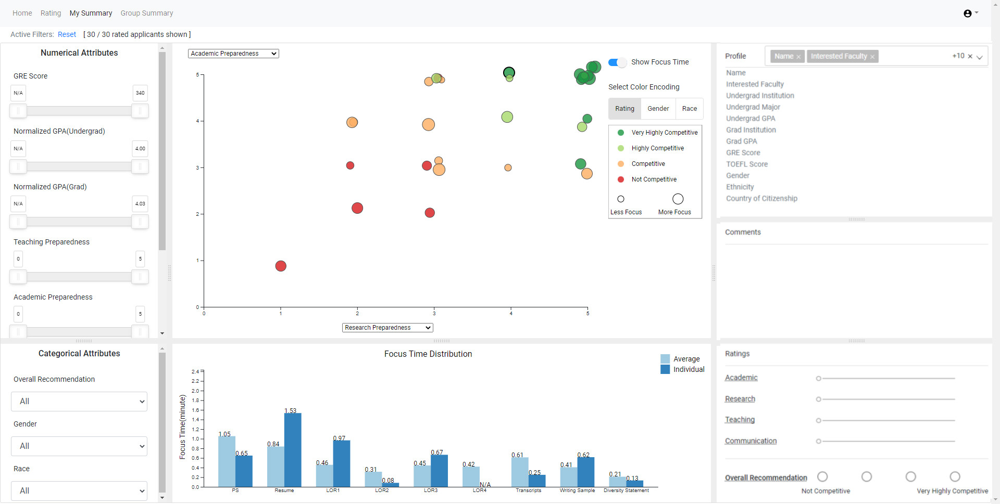
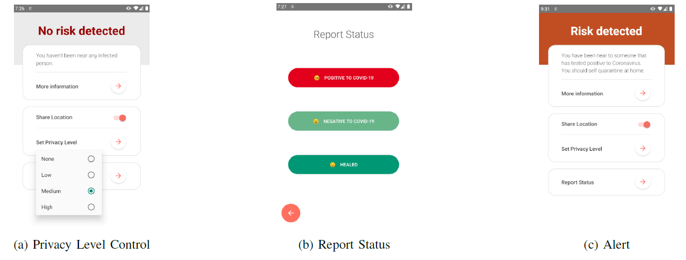

About Me
I am a 4th year PhD student in the Department of Computer Science at Emory Unvieristy
advised by Dr. Emily Wall.
My reserach interests include:
- Developing visual interfaces to promoting personal awareness (e.g., biased behaviors) in data analysis and decision making.
- Investigating the effects of social influence (i.e., how people can be impacted by other people’s decisions/behaviors) in decsision making.
Research Projects

VA‑supported Bias‑aware Graduate Admissions
We designed and implemented a visualization system for graudate admissions that promotes reviewers’ self-reflection and
scrutiny to ensure fair and consistent review processes. The visualization interface logs reviewers’ interactions in order to provide a
granular analysis of review behaviors across attributes such as race and gender of applicants which can relate to potentially biased
processes and inform review procedures in subsequent cycles. We conducted a user study to evaluate the effectiveness of the system.
Demo

Real-time Contact Tracing and Risk Monitoring via Privacy-Enhanced Mobile Tracking
We expanded a contact tracing Mobile App for COVID19 with privacy enhancement on user locations using Geo-Indistinguishability mechanism and provides risk monitoring.
The system allows users to control
and refine the precision with which their information will be
collected and used, and enable: 1) contact tracing of
individuals who are exposed to infected cases and identification
of hot-spot locations, 2) individual risk monitoring based on
the locations they visit and their contact with others.
Source code
Publications
React: Real-time contact tracing and risk monitoring via privacy-enhanced mobile tracking
Y. Da, R. Ahuja, L. Xiong, and C. Shahabi
IEEE International Conference on Data Engineering, 2021.
PDF